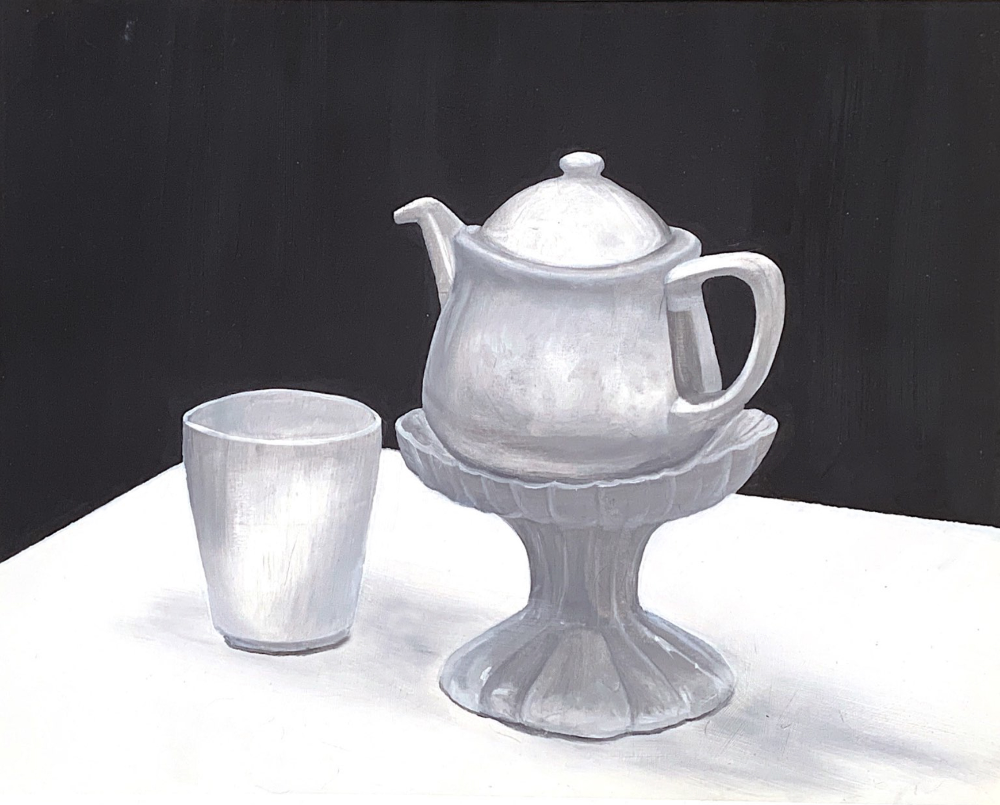

Achromatic Still-Life
Oil paint on gesso primed paper, 12" x 16"
For my first project in my Painting course at Binghamton University, we created achromatic (black & white) still lifes. Still-life setups of various household objects were set up in the painting studio to be used as subjects. The painting was created with oil paint on gesso primed paper.